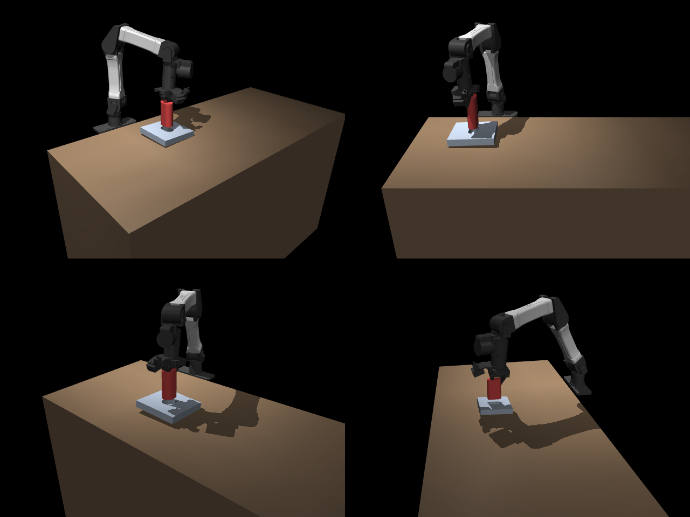
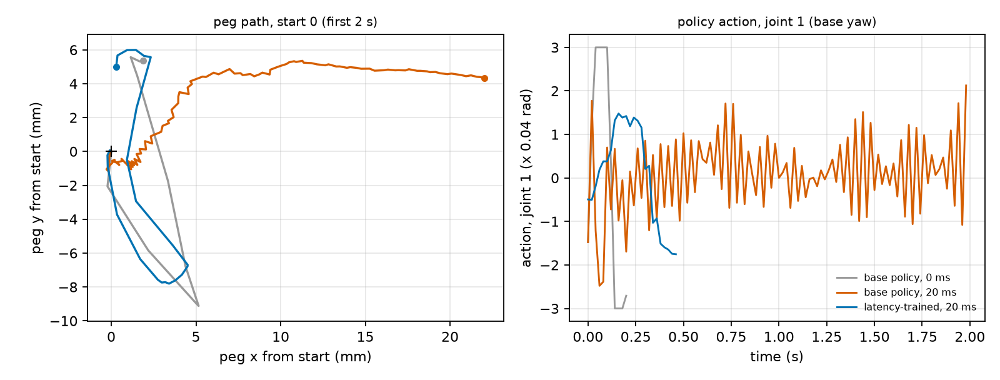
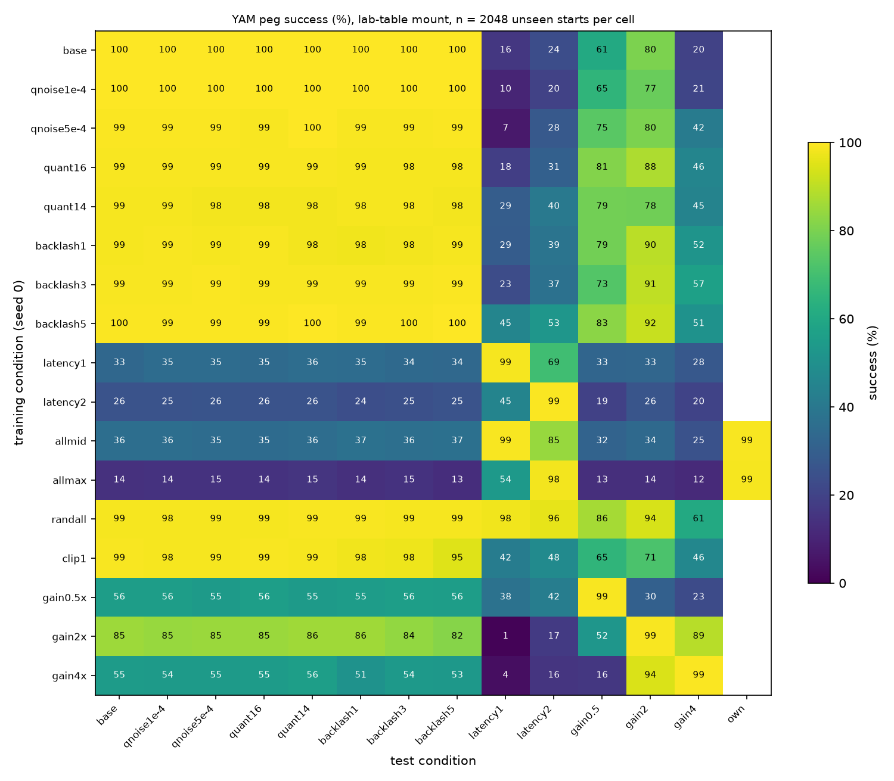
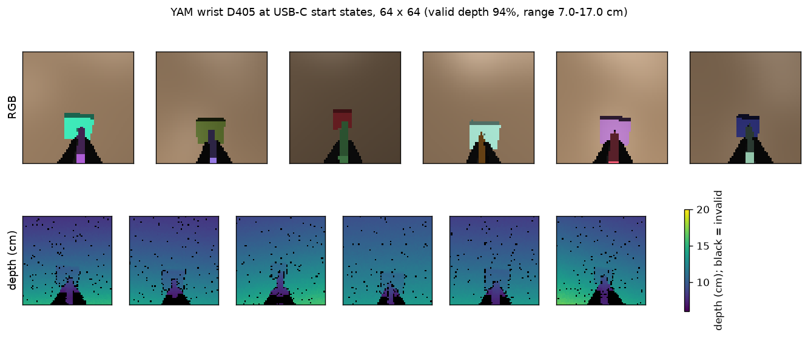

<title>Blind Precise Assembly Reproduction</title>
<meta name="claude:viewport-fit-sides" content="cover">
<meta name="description" content="Blind proprioceptive insertion: a reproduction of Bronars et al. (arXiv:2610.23849) and its extension to the YAM arm and USB-C, organized by research question. ASD-STE100 text.">
<link rel="preconnect" href="https://fonts.googleapis.com">
<link rel="stylesheet" href="https://fonts.googleapis.com/css2?family=Inter:wght@300;400;500;600;700&family=JetBrains+Mono:wght@400;500&display=swap">
<link rel="stylesheet" href="static/css/style.css">
<script type="module" src="static/js/figures/index.js"></script>

<main>

  <!-- ============================================================ hero -->
  <header class="hero">
    <div class="badge">Status report · 21 October 2026, 11:00 UTC · Simulation results</div>
    <h1>Blind Insertion with Joint Sensing Only<br><span class="sub">From a paper reproduction to USB-C on the YAM arm</span></h1>
    <p class="authors">Yash Chitambar</p>
    <p class="affil">Extends Bronars, Park, Kedia and Agrawal, <i>Blind Precise Assembly: Proprioceptive Sim-to-Real Peg-in-Hole for Diverse Parts</i></p>
    <nav class="links">
      <a class="btn" href="https://arxiv.org/abs/2610.23849">Original paper</a>
      <a class="btn" href="https://younghyopark.me/blind-proprioceptive-assembly/">Original project page</a>
      <a class="btn" href="https://claude.ai/artifact/CjxtoUaw6MhSsYZLwnPVEh">USB-C report</a>
    </nav>
  </header>

  <figure class="teaser">
    <video autoplay muted loop playsinline poster="static/images/yam_hero_poster.jpg">
      <source src="static/videos/yam_hero.mp4" type="video/mp4">
    </video>
    <figcaption><b>The YAM arm puts a peg into a hole with no camera and no force sensor.</b> The arm stands on the lab table. Top: the full arm. Bottom: a close-up of the same episode. The two starts are the farthest of 64 logged starts (15 and 16 mm from the hole). The policy did not see these parts in training. The video plays at ¼ of real time.</figcaption>
  </figure>

  <!-- ============================================================ question -->
  <section id="question">
    <h2>The question</h2>
    <p class="lede">Can a policy that senses only the robot's own joints insert connector-scale parts on a low-cost arm? A USB-C port has an opening of 8.3 × 2.6 mm and a clearance of approximately 0.05 mm on each side.</p>
    <p>The paper shows blind insertion for large pegs (openings of 30 to 90 mm, 0.5 to 1.5 mm clearance) on a 7-joint Flexiv arm. It does not test small parts or a low-cost arm. We answer five questions in order. Each step uses the result of the step before it.</p>
    <div class="tbl">
      <table>
        <thead><tr><th>Question</th><th>Result so far</th><th>Status</th></tr></thead>
        <tbody>
          <tr><td><a href="#rq1"><b>RQ1</b></a> Do the paper's results reproduce with our own code?</td><td>Yes. 99.9% success (paper 99.4%). Generalization, search behaviour and probe also agree. A second task (gears) also agrees.</td><td><span class="chip ok">Answered</span></td></tr>
          <tr><td><a href="#rq2"><b>RQ2</b></a> Does it transfer to the 6-joint YAM with realistic gains?</td><td>Yes, 99.8% on the lab table. Latency, backlash and gain errors break a policy that did not train with them. One policy trained with random levels keeps 96 to 98% under all of them except gains.</td><td><span class="chip ok">Answered in sim</span> <span class="chip run">Real arm values needed</span></td></tr>
          <tr><td><a href="#rq3"><b>RQ3</b></a> How does success change as parts get smaller and tighter?</td><td>40-cell grid from 60 mm to 8 mm openings and 1.0 to 0.05 mm clearance.</td><td><span class="chip run">Training</span></td></tr>
          <tr><td><a href="#rq4"><b>RQ4</b></a> Can a blind policy plug in a USB-C drive?</td><td>Yes in simulation: 91.5% at 0.02 to 0.1 mm clearance. 50% success from 6.0 mm away, and from 7.1 mm after training on wider starts. But 20 ms of latency or 1 arcmin of backlash drops it to 5 to 9%.</td><td><span class="chip ok">First result</span> <span class="chip run">Training with robot errors</span></td></tr>
          <tr><td><a href="#rq5"><b>RQ5</b></a> Where does a camera help?</td><td>On familiar large pegs, the camera is faster. On unseen parts, blind is better by 12 to 54 points. The YAM wrist camera does not see the USB-C port.</td><td><span class="chip ok">Large pegs</span> <span class="chip todo">USB-C next</span></td></tr>
        </tbody>
      </table>
    </div>
  </section>

  <!-- ============================================================ approach -->
  <section id="approach">
    <h2>Approach</h2>
    <p>All phases use the same simulation, policy, training and test procedure. Only the robot and the parts change. This lets us compare results across phases.</p>
    <figure class="viz" data-fig="diagram">
      <div class="viz-tag">Interactive · hover a block</div>
      <div class="viz-mount"></div>
      <figcaption><b>Policy.</b> A temporal convolution network (TCN) encodes the last 30 steps (0.6 s) of joint angles, joint velocities and actions into a 32-value latent. The actor uses the latent and the current step. The amber blocks are for training only: a critic with the true peg pose, and a contact decoder that predicts which edge points touch. Hover a block for its size.</figcaption>
    </figure>
    <div class="cols2">
      <ul class="facts">
        <li><b>Simulation.</b> MuJoCo Warp on the GPU, 12,288 worlds in parallel. Physics at 1 kHz, control at 50 Hz.</li>
        <li><b>Action.</b> A joint-target offset. A PD controller holds the target for 20 ms. The low joint stiffness lets contact forces bend the arm, and the joint encoders sense this.</li>
        <li><b>Parts.</b> 1,024 random peg and hole pairs in each run (paper Table 1). Fixture pose, grasp, friction and contact stiffness change in each episode.</li>
      </ul>
      <ul class="facts">
        <li><b>Training.</b> PPO with a contact-prediction loss. 300 million steps (2.3 h on an RTX 3090 Ti). Phases C to E stop at 99% training success after at least 50 million steps.</li>
        <li><b>Test.</b> 2,048 starts with parts that training did not use, the same starts for every policy. Deterministic actions. 95% Wilson intervals.</li>
        <li><b>Sim checks.</b> Before training, ten checks test the contact signal. For example, a 0.3 N push is visible in the joints, and a peg drop-in shows as a joint-velocity peak.</li>
      </ul>
    </div>
  </section>

  <!-- ============================================================ examples -->
  <section id="examples">
    <h2>Examples from every test</h2>
    <p>Each test records its episodes. The video for a test shows its fastest, median and slowest successes and up to three episodes of each failure type. A green label is a success. A red label gives the failure type. Select a task, then a test.</p>
    <figure class="viz" data-fig="demos">
      <div class="viz-tag">Interactive · select a test</div>
      <div class="viz-mount"></div>
      <figcaption><b>Success and failure examples, real time.</b> Each label gives the result, the time and the start distance from the hole. The text below the video gives the success rate of the full test and the count of each failure type. Each video comes from a new run of the test. The simulator is not bitwise deterministic, so the rates can differ slightly from the tables.</figcaption>
    </figure>
  </section>

  <!-- ============================================================ RQ1 -->
  <p class="finding">RQ1 · Validation</p>
  <section id="rq1">
    <h2>The reproduction matches the paper</h2>
    <p class="claim">The blind policy seats the peg on 2,046 of 2,048 unseen starts (99.9%). The paper reports 99.4%. It is also faster and moves less.</p>
    <figure class="viz" data-fig="headline">
      <div class="viz-tag">Interactive · hover a bar</div>
      <div class="viz-mount"></div>
      <figcaption><b>Success on 2,048 matched starts (Flexiv arm, 1.0 to 1.5 mm clearance).</b> Whiskers: 95% Wilson interval. Black mark: the paper's value. The spiral search knows the true hole position, so it is an optimistic baseline. Hover for time and travel.</figcaption>
    </figure>
    <div class="tbl">
      <table>
        <thead><tr><th>Metric</th><th class="n">Blind, ours</th><th class="n">Blind, paper</th><th class="n">Camera, ours</th><th class="n">Camera, paper</th></tr></thead>
        <tbody>
          <tr><td>Success rate</td><td class="n">99.9%</td><td class="n">99.4%</td><td class="n">99.95%</td><td class="n">97.2%</td></tr>
          <tr><td>Median time to seat</td><td class="n">0.64 s</td><td class="n">0.80 s</td><td class="n">0.38 s</td><td class="n">0.44 s</td></tr>
          <tr><td>Median lateral travel</td><td class="n">26 mm</td><td class="n">37 mm</td><td class="n">15 mm</td><td class="n">20 mm</td></tr>
        </tbody>
        <caption>Paper Table 5 metrics, seed 0. The spiral search moves 147 mm (paper: 95 mm). Three camera seeds give 99.9 to 100%.</caption>
      </table>
    </div>
    <p><b>Three seeds agree.</b> Over three blind seeds and 6,144 starts, the blind policy seats 99.77% (99.66 to 99.90% for each seed), with a median time of 0.64 s. Three camera seeds seat 99.95%. In the six unseen families, the blind policy beats the camera policy in all 18 pairs of seed and family. For example, the three-seed means for extreme sizes are 86.3% (blind) and 30.2% (camera). Without the contact loss, two seeds seat 99.0% and 99.2%. But the probe reads the contact mode less well from their latent: 63 to 65%, against 68 to 70% with the contact loss.</p>
    <p>The policy does not search in a pattern. It presses the peg on the plate, slides it, and feels the edge of the hole through the joints. Then it drops the peg in.</p>
    <figure class="viz" data-fig="paths">
      <div class="viz-tag">Interactive · select a start, play the timeline</div>
      <div class="viz-mount"></div>
      <figcaption><b>Search paths on the same start.</b> (a) The path of the peg's bottom centre over the hole (grey). The open circle is the start. (b) The height of the peg: the policy presses, finds the hole, and drops in. Select a start and push Play.</figcaption>
    </figure>
    <figure class="viz" data-fig="ood">
      <div class="viz-tag">Interactive · hover a bar</div>
      <div class="viz-mount"></div>
      <figcaption><b>Success on six part families that training did not use (paper Fig. 11).</b> 1,024 starts for each bar. Dashed marks: the paper's values. The blind policy beats the camera policy in every family, by 12 to 54 points, as in the paper. Camera seeds 1 and 2 agree with seed 0 (extreme size: 29% and 30%).</figcaption>
    </figure>
    <figure class="viz" data-fig="training">
      <div class="viz-tag">Interactive · hover to read every run</div>
      <div class="viz-mount"></div>
      <figcaption><b>Training success (paper Figs. 8 and 14).</b> (a) Three blind seeds pass 90% after approximately 40 million steps. The camera policy needs fewer steps, but each step is 4.5 times slower. (b) Without the contact-prediction loss, learning needs 2.2 times as many steps (paper: 2.7). (c) The YAM, USB-C and gear runs. Dotted line: 90%.</figcaption>
    </figure>
    <figure class="viz" data-fig="probe">
      <div class="viz-tag">Interactive · hover a bar or a cell</div>
      <div class="viz-mount"></div>
      <figcaption><b>The latent holds the contact state (paper Figs. 10 and 15).</b> (a) A linear probe reads the contact mode from the latent with 70% mean recall (paper 70%). The current observation alone gives 53%. (b) If a state receives the latent of a different contact mode, the action changes up to 2.2 times as much as for the same mode.</figcaption>
    </figure>
    <p><b>A second task also reproduces.</b> We built the paper's gear-meshing task: a gear must slide down a shaft and mesh with one or two free anchor gears. The blind policy seats 99.94% of 8,192 unseen gear sets and 99.7 to 100% in six unseen gear families. The paper reports more than 99.9%.</p>
  </section>

  <!-- ============================================================ RQ2 -->
  <p class="finding">RQ2 · Transfer to the YAM</p>
  <section id="rq2">
    <h2>The policy transfers to the YAM, if training includes the robot's latency and backlash</h2>
    <p class="claim">On the lab table, the YAM policy seats 99.8% of 2,048 unseen starts. It learns 2.3 times faster than on the Flexiv arm.</p>
    <p>The YAM is a low-cost 6-joint arm. We use the YAM workcell from RoboSimStudio: the base is level with the table top, at the position of the lab arm. The fixture lies on the table, 0.25 to 0.45 m in front of the base. The joint stiffness is 80 N·m/rad (first three joints) and 30 N·m/rad (wrist), from the Damiao motor model. Only the robot changes from RQ1: same pegs, same policy, same training.</p>
    <div class="cols2">
      <figure class="img">
        
        <figcaption><b>The lab table setup.</b> Four start states from different angles.</figcaption>
      </figure>
      <div class="tbl">
        <table>
          <thead><tr><th>YAM, seed 0</th><th class="n">Value</th></tr></thead>
          <tbody>
            <tr><td>Test success (2,048 starts)</td><td class="n">99.8%</td></tr>
            <tr><td>Steps to 90% training success</td><td class="n">17 M (Flexiv: 40 M)</td></tr>
            <tr><td>Median time to seat</td><td class="n">0.28 s</td></tr>
            <tr><td>Unseen families: tighter, slender, very slender, mild size, extreme size</td><td class="n">97.0 to 99.7%</td></tr>
            <tr><td>Unseen family: random convex</td><td class="n">0.5% (Flexiv: 22.8%)</td></tr>
          </tbody>
          <caption>Most random-convex failures are slips: the part turns out of the YAM's light grasp.</caption>
        </table>
      </div>
    </div>

    <h3>What a real arm adds: latency, backlash and gain errors</h3>
    <p>A real arm is not the simulation. We trained one YAM policy for each of 15 robot conditions, and tested each policy under 13 conditions (2,048 starts for each test). One more policy trained with all conditions at random levels: each world draws its own noise, encoder resolution, backlash and latency.</p>
    <figure class="viz" data-fig="robust">
      <div class="viz-tag">Interactive · hover a group</div>
      <div class="viz-mount"></div>
      <figcaption><b>Success under each test condition (YAM, seed 0, 2,048 unseen starts for each bar).</b> Orange: the base policy, trained with none of the conditions. Blue: the policy trained with that condition. Green: the policy trained with random levels of noise, encoder resolution, backlash and latency (not gains). Whiskers: 95% Wilson interval. Latency of 20 and 40 ms is 1 and 2 steps of the control loop. Backlash is in arcminutes (′). Hover a group for exact values.</figcaption>
    </figure>
    <ul class="facts">
      <li><b>Sensor noise and encoder resolution do not matter.</b> With joint noise up to 5·10⁻⁴ rad or 14-bit encoders, no policy loses more than 1 point.</li>
      <li><b>Backlash halves the success</b> of the base policy (43 to 47%). Training with any backlash level from 1 to 5 arcmin gives 98.5 to 99.6% at all three levels.</li>
      <li><b>Latency is the worst condition.</b> With 20 ms of latency, the base policy seats only 16%. A policy trained with 20 ms seats 99%, but only 33% when there is no latency. Thus, the latency in training must match the robot, or vary over a range that contains it.</li>
      <li><b>Stiffer gains cause slips.</b> At 4 times the gains, the base policy seats 20%. Most of its failures are slips.</li>
      <li><b>One randomized policy covers all levels.</b> The policy trained with random levels seats 96 to 98% under every noise, encoder, backlash and latency test, including 0, 20 and 40 ms. It costs 3.6 points on the ideal arm (96.2% against 99.8%). Gains were not randomized: at 4 times the gains it seats 52%.</li>
    </ul>
    <p><b>Why: the base policy uses bang-bang control.</b> In the ideal simulation, the base policy sends full-scale commands: 27% of its action values are at the limit. With no delay and no play, this is fast and accurate. With 20 ms of latency, each command arrives one step late, so the actions oscillate with a 2-step period (lag-1 autocorrelation −0.29) and the peg drifts away. All policies that trained with a condition use small, smooth actions instead: 0% at the limit and an RMS action of 1.0 against 2.1. But small actions alone are not sufficient. A policy trained with the action limit at 1 instead of 3 seats 42 to 48% with latency (base: 16 to 24%) and 32 to 41% with backlash (base: 43 to 47%). The policy must see the condition in training.</p>
    <figure class="img">
      
      <figcaption><b>One start, three cases.</b> Grey: base policy without latency (seated in 0.2 s, actions at ±3). Orange: the same policy with 20 ms latency. The actions oscillate and the peg drifts 22 mm away. Blue: the policy trained with 20 ms latency, seated in 0.46 s with smooth actions. 64 logged starts give the same pattern (<code>scripts/analysis_c_failures.py</code>).</figcaption>
    </figure>
    <div class="clips">
      <figure class="teaser">
        <video autoplay muted loop playsinline poster="static/images/yam_latency_poster.jpg">
          <source src="static/videos/yam_latency.mp4" type="video/mp4">
        </video>
        <figcaption><b>Same start, 20 ms latency.</b> Left: the base policy. Right: the policy trained with 20 ms latency. ¼ of real time.</figcaption>
      </figure>
      <figure class="teaser">
        <video autoplay muted loop playsinline poster="static/images/yam_backlash_poster.jpg">
          <source src="static/videos/yam_backlash.mp4" type="video/mp4">
        </video>
        <figcaption><b>Same start, 3 arcmin of backlash.</b> Left: the base policy. Right: the policy trained with backlash. ¼ of real time.</figcaption>
      </figure>
      <figure class="teaser">
        <video autoplay muted loop playsinline poster="static/images/yam_gain4_poster.jpg">
          <source src="static/videos/yam_gain4.mp4" type="video/mp4">
        </video>
        <figcaption><b>Same start, 4 times the joint gains.</b> Left: the base policy; the peg turns in the hand. Right: the policy trained at 4 times the gains. ¼ of real time.</figcaption>
      </figure>
    </div>
    <details class="more">
      <summary>Full table: 16 training conditions × 14 test conditions</summary>
      <figure class="img">
        
        <figcaption><b>Success (%) for each training condition (rows) and test condition (columns).</b> 2,048 starts in each cell. "randall": random levels in each world. "allmid": noise 10⁻⁴ rad, 16 bit, 1 arcmin, 20 ms. "allmax": 5·10⁻⁴ rad, 14 bit, 5 arcmin, 40 ms. "own": the policy's own condition. A policy trained with latency fails without it, in every row.</figcaption>
      </figure>
    </details>
    <div class="note">
      <p><b>Next: measure the real arm.</b> The simulation needs the real YAM's latency (to ±10 ms), backlash and joint gains. We wrote a 1 to 2 hour procedure: a timing log, joint step tests and a dial-indicator test. A script fits the simulated arm to the step data and gives the latency in control steps (<code>docs/REAL_YAM_LATENCY_BACKLASH.md</code>). Until we have these values, Phases D and E train with the random levels above. If the real latency is fixed and known, a policy trained with that latency only can gain back the 3.6 points.</p>
    </div>
  </section>

  <!-- ============================================================ RQ3 -->
  <p class="finding">RQ3 · Scale</p>
  <section id="rq3">
    <h2>Scale study: from 60 mm pegs to connector size</h2>
    <p class="claim">The grid trains one YAM policy for each part size and clearance. Each run trains with the random robot conditions from RQ2.</p>
    <p>The pegs have a 2:1 stadium shape. The opening is 60, 30, 15 or 8 mm long. The clearance is 1.0, 0.5, 0.2, 0.1 or 0.05 mm on each side. There are two start regimes. In the scaled regime, the start offset is proportional to the part size (10 mm median at 60 mm). In the fixed regime, the median offset is 3 mm for all sizes. If both regimes fail at the same size, the contact signal is the limit. If only the fixed regime fails, the search area is the limit.</p>
    <div class="tbl">
      <table>
        <thead><tr><th>Opening</th><th class="n">1.0 mm</th><th class="n">0.5 mm</th><th class="n">0.2 mm</th><th class="n">0.1 mm</th><th class="n">0.05 mm</th></tr></thead>
        <tbody>
          <tr><td>60 mm</td><td class="n">first</td><td class="n">·</td><td class="n">·</td><td class="n">·</td><td class="n">·</td></tr>
          <tr><td>30 mm</td><td class="n">·</td><td class="n">first</td><td class="n">·</td><td class="n">·</td><td class="n">·</td></tr>
          <tr><td>15 mm</td><td class="n">·</td><td class="n">·</td><td class="n">first</td><td class="n">·</td><td class="n">·</td></tr>
          <tr><td>8 mm</td><td class="n">first</td><td class="n">first</td><td class="n">first</td><td class="n">first</td><td class="n">first</td></tr>
        </tbody>
        <caption>Training order. "first": the diagonal from large and loose to small and tight, and the 8 mm row (16 runs with both regimes). Then the other 24 cells. Results come as each run completes.</caption>
      </table>
    </div>
  </section>

  <!-- ============================================================ RQ4 -->
  <p class="finding">RQ4 · USB-C</p>
  <section id="rq4">
    <h2>The blind policy plugs in USB-C drives</h2>
    <p class="claim">At the final clearance of 0.02 to 0.1 mm, the blind policy seats 91.5% of 2,048 unseen USB-C drives. It seats 50% from 6.0 mm away. With 20 ms of latency or 1′ of backlash, it seats only 5 to 9%.</p>
    <p>The YAM holds a USB-C flash drive and must plug it into a blind port. Training uses a curriculum: the clearance starts at 0.3 mm and decreases in five stages. The first run failed because the drive slipped out of the gripper. A box-shaped pad gives only one edge of contact when the drive turns in the hand. With 4 × 4 small spheres on each pad, no drive slips. After this correction, the policy completed the curriculum (200 million steps).</p>
    <div class="cols2">
      <figure class="teaser">
        <video autoplay muted loop playsinline poster="static/images/usbc_final_stage_poster.jpg">
          <source src="static/videos/usbc_final_stage.mp4" type="video/mp4">
        </video>
        <figcaption><b>Four final-stage episodes.</b> Labels: start offset, clearance and result. Three drives are seated, one from 5.1 mm. One stops tilted. ⅕ of real time.</figcaption>
      </figure>
      <div class="tbl">
        <table>
          <thead><tr><th>USB-C test (2,048 starts)</th><th class="n">Success</th></tr></thead>
          <tbody>
            <tr><td>Curriculum stages 2, 3, 4</td><td class="n">99.0, 98.9, 98.1%</td></tr>
            <tr><td>Final stage, 0.02 to 0.1 mm</td><td class="n">91.5%</td></tr>
            <tr><td>Clearance 0.02 / 0.05 / 0.1 mm (2 mm offset)</td><td class="n">93.9 / 98.0 / 98.5%</td></tr>
            <tr><td>Port with a 0.2 to 0.5 mm chamfer (no retraining)</td><td class="n">83.6%</td></tr>
            <tr><td>Port with a 5 to 15 N latch (no retraining)</td><td class="n">28.0%</td></tr>
            <tr><td>Port with a 5 to 15 N latch, after a 100 M-step fine-tune</td><td class="n">89.7%</td></tr>
            <tr><td>Final stage, after a fine-tune on wider starts</td><td class="n">91.4%</td></tr>
            <tr><td>Port that faces the robot (no retraining)</td><td class="n">0%</td></tr>
          </tbody>
          <caption>Most final-stage failures (105 of 175) are search failures: the policy does not find the port in 8 s. The last five rows run on the lab table (reference: 77.9%). The fine-tunes start from the old-mount policy.</caption>
        </table>
      </div>
    </div>
    <figure class="viz" data-fig="capture">
      <div class="viz-tag">Interactive · hover a point</div>
      <div class="viz-mount"></div>
      <figcaption><b>Capture radius: success against the start distance (0.05 mm clearance, n = 8,192).</b> Points: 0.5 mm bins with 95% Wilson intervals. Orange: logistic fit. Dashed line and band: the 50% radius (5.98 mm, 95% interval 5.91 to 6.04 mm). Up to 3 mm, success is 98 to 100%.</figcaption>
    </figure>
    <p><b>Training on wider starts increases the capture radius to 7.1 mm.</b> We fine-tuned the policy for 100 million steps on the lab table, with start offsets up to 6.5 mm in x and y (median 5 mm, before: 3 mm). The 50% radius increased from 5.56 mm (95% interval 5.45 to 5.66) to 7.13 mm (7.05 to 7.22), at 0.05 mm clearance and 8,192 starts on the lab table. From 4 to 4.5 mm, the success increased from 70% to 87%. On the final-stage test (3 mm median offset), it seats 91.4% (before: 77.9%) in a median of 1.90 s. The fine-tune also moves the policy from the old mount to the lab table, so part of the gain comes from the mount.</p>
    <p>The joints feel the drive. On the YAM, a lateral push of 0.04 N or a vertical push of 0.13 N on the drive gives a joint deflection three times the joint noise (σ = 10⁻⁴ rad). For the YAM peg, these values are 1.1 N and 0.8 N.</p>

    <h3>Robot errors are the main risk for USB-C</h3>
    <p>The USB-C fit is 20 to 100 times tighter than the peg fit, so latency and backlash have a larger effect. We tested the USB-C policy with the Phase C conditions on the lab table (final clearance, 3 mm median start offset, 2,048 matched starts).</p>
    <div class="tbl">
      <table>
        <thead><tr><th>Test condition</th><th class="n">Trained without errors</th><th class="n">Fine-tuned with random errors</th></tr></thead>
        <tbody>
          <tr><td>No error</td><td class="n">78.0%</td><td class="n" data-ft="base">31.1%</td></tr>
          <tr><td>Latency 20 ms</td><td class="n">5.2%</td><td class="n" data-ft="lat1">22.6%</td></tr>
          <tr><td>Latency 40 ms</td><td class="n">5.0%</td><td class="n" data-ft="lat2">22.0%</td></tr>
          <tr><td>Backlash 1′</td><td class="n">8.6%</td><td class="n" data-ft="bl1">45.4%</td></tr>
          <tr><td>Backlash 3′</td><td class="n">7.2%</td><td class="n" data-ft="bl3">44.6%</td></tr>
          <tr><td>Joint noise 5·10⁻⁴ rad</td><td class="n" data-ft0="qn5e-4">77.3%</td><td class="n" data-ft="qn5e-4">32.0%</td></tr>
          <tr><td>14-bit encoders</td><td class="n" data-ft0="quant14">78.4%</td><td class="n" data-ft="quant14">29.6%</td></tr>
        </tbody>
        <caption>The policy trained on the old mount (91.5% there, 78.0% on the lab table). The fine-tune adds 100 million steps on the lab table with a random latency (0 to 40 ms), backlash (0 to 5′), encoder resolution and joint noise in each world. Its training success was 40% and still increasing, so the run is not complete.</caption>
      </table>
    </div>
    <p>As in Phase C, noise and encoder resolution have no effect, and latency and backlash do. The fine-tune is 4 to 6 times better under errors, but it loses 47 points without errors. On the peg, a policy trained with random errors from the start lost only 3.6 points (RQ2). Thus, the server now trains USB-C from the start: the plain policy, the chamfered port, the latch and the side port, and then a run with the random errors.</p>
  </section>

  <!-- ============================================================ RQ5 -->
  <p class="finding">RQ5 · Vision</p>
  <section id="rq5">
    <h2>A camera helps on familiar parts, not on new parts</h2>
    <p>On large pegs, the camera policy is faster (0.38 s against 0.64 s). On unseen part families, it loses 12 to 54 points against the blind policy (RQ1 figure). For USB-C, the simulated YAM has the real wrist camera (Intel RealSense D405) with a depth model: no depth closer than 7 cm, noise that increases with distance, and dropouts at edges.</p>
    <p><b>The wrist camera does not see the port.</b> The camera is behind the drive and looks along it, so the drive hides the port. The camera sees the housing at approximately 9 cm, and the port is only a few pixels wide at 64 × 64. Five camera policies are ready to train (RGB, depth, and each with joint data, approximately 70 GPU hours). First we must decide if the camera moves.</p>
    <figure class="img">
      
      <figcaption><b>The YAM wrist camera at six USB-C start states, 64 × 64 pixels.</b> Top: RGB with random lights and colors. Bottom: depth after the camera model, in cm. Black pixels have no depth. The drive is in the centre. The port is behind it.</figcaption>
    </figure>
  </section>

  <!-- ============================================================ next -->
  <section id="next">
    <h2>Next steps</h2>
    <ol class="facts">
      <li><b>Real YAM values.</b> Measure latency, backlash and gains (procedure ready). They set the training ranges for D, E and the first real-arm test.</li>
      <li><b>RQ3 grid.</b> Complete the diagonal and the 8 mm row, then the other cells. Answer: at what size does success fall below 90%, and is the cause the search area or the signal?</li>
      <li><b>RQ4 on the lab table.</b> USB-C, chamfer, latch and side port (training now), then USB-C with random robot errors from the start, and the ablations (no contact loss, history length).</li>
      <li><b>RQ5.</b> Decide the camera position, then train the five camera policies on USB-C (approximately 70 GPU hours).</li>
      <li><b>More seeds</b> where a result is close.</li>
    </ol>
  </section>

  <!-- ============================================================ appendix -->
  <section id="appendix">
    <h2>Details</h2>
    <details class="more">
      <summary>Differences from the paper</summary>
      <div class="tbl">
        <table>
          <thead><tr><th>Item</th><th>Paper</th><th>Ours</th><th>Reason</th></tr></thead>
          <tbody>
            <tr><td>Framework</td><td>mjlab and rsl_rl</td><td>MuJoCo Warp and our own PPO</td><td>mjlab needs MuJoCo 3.11. We use 3.12.</td></tr>
            <tr><td>Gripper</td><td>Robotiq 2F-85</td><td>Two slide fingers with constant force</td><td>The linkage is slow to simulate.</td></tr>
            <tr><td>Different parts</td><td>12,288</td><td>1,024 (each in 12 worlds)</td><td>Model build time</td></tr>
            <tr><td>Success</td><td>"Entire bottom face seated"</td><td>64 edge points inside, less than 1.5 mm above the floor</td><td>A precise definition</td></tr>
            <tr><td>Arm parameters</td><td>Identified on the real arm</td><td>Menagerie values</td><td>No real arm yet</td></tr>
            <tr><td>Seeds and run length, RQ2 to RQ4</td><td>Plan: 3 seeds, 300 M steps</td><td>Seed 0, stop at 99% after 50 M</td><td>First results sooner</td></tr>
            <tr><td>USB-C gripper pads</td><td>—</td><td>4 × 4 contact spheres</td><td>Box pads drop the drive</td></tr>
          </tbody>
        </table>
      </div>
    </details>
    <details class="more">
      <summary>Simulation checks</summary>
      <div class="tbl">
        <table>
          <thead><tr><th>Check</th><th>Result</th></tr></thead>
          <tbody>
            <tr><td>GPU against CPU MuJoCo</td><td>One 20 ms step: ≤ 0.04 mm. A grasped peg diverges later (the grasp stick-slip is chaotic), so we compare distributions.</td></tr>
            <tr><td>Drop test</td><td>1,024 of 1,024 pegs drop into their holes and stay.</td></tr>
            <tr><td>Contact signal</td><td>Flexiv: a 0.30 N vertical push is visible above 10⁻⁴ rad joint noise. YAM USB-C: 0.13 N.</td></tr>
            <tr><td>Drop-in signal</td><td>Joint-velocity peak-to-noise ratio 3.2 (Flexiv peg), 5.0 (YAM USB-C at 10⁻⁴ rad noise), 1.0 at 5·10⁻⁴ rad.</td></tr>
            <tr><td>Leak test</td><td>The actor's input does not change when the privileged state changes.</td></tr>
            <tr><td>Determinism</td><td>MuJoCo Warp is not bitwise deterministic (10⁻³ after 20 ms). We compare distributions.</td></tr>
            <tr><td>Baselines</td><td>Zero action 2.9%, random actions 6.1%, spiral search 77.3%.</td></tr>
          </tbody>
        </table>
      </div>
    </details>
    <details class="more">
      <summary>Compute</summary>
      <p>Local: one RTX 3090 Ti, 37,500 steps per second (a 300 M run takes 2.3 h). Server: five Tesla V100 GPUs, 20,500 steps per second for the peg and 11,000 for USB-C. A control run on the server gave the same curve as the local seeds (90% after 37.4 M steps against 39.7 and 41.7 M).</p>
    </details>
  </section>

  <section id="bibtex">
    <h2>Original paper</h2>
    <div class="bibtex">
      <button class="copy" type="button" id="copy-bib">Copy</button>
<pre><code>@misc{bronars2026blind,
  title         = {Blind Precise Assembly: Proprioceptive Sim-to-Real
                   Peg-in-Hole for Diverse Parts},
  author        = {Bronars, Antonia and Park, Younghyo and Kedia, Kushal
                   and Agrawal, Pulkit},
  year          = {2026},
  eprint        = {2610.23849},
  archivePrefix = {arXiv},
  primaryClass  = {cs.RO},
}</code></pre>
    </div>
  </section>

  <footer>
    Text in ASD-STE100 Simplified Technical English. All numbers come from simulation. Videos are replays of logged rollouts in CPU MuJoCo.
  </footer>
</main>

<script>
  document.querySelectorAll('.bibtex .copy').forEach((btn) => {
    btn.addEventListener('click', async () => {
      const code = btn.parentElement.querySelector('code');
      try { await navigator.clipboard.writeText(code.textContent); btn.textContent = 'Copied'; }
      catch { const r = document.createRange(); r.selectNodeContents(code); const s = getSelection(); s.removeAllRanges(); s.addRange(r); btn.textContent = 'Selected'; }
      setTimeout(() => (btn.textContent = 'Copy'), 1500);
    });
  });
</script>
